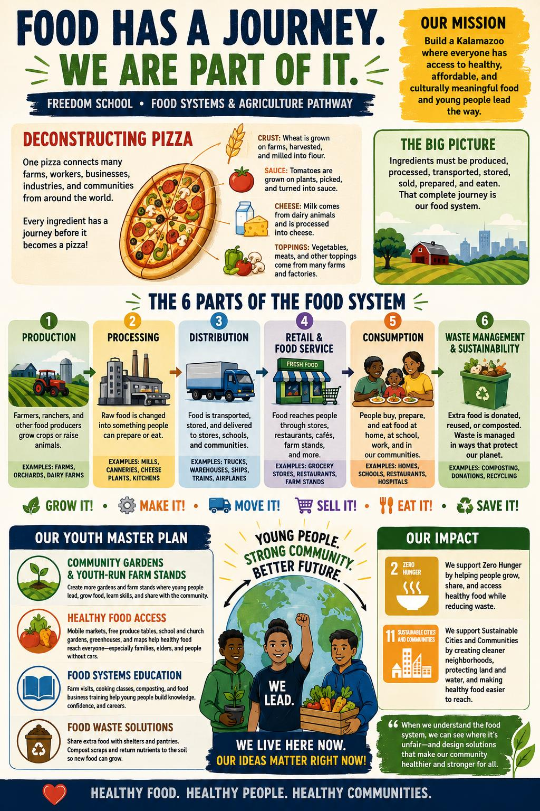
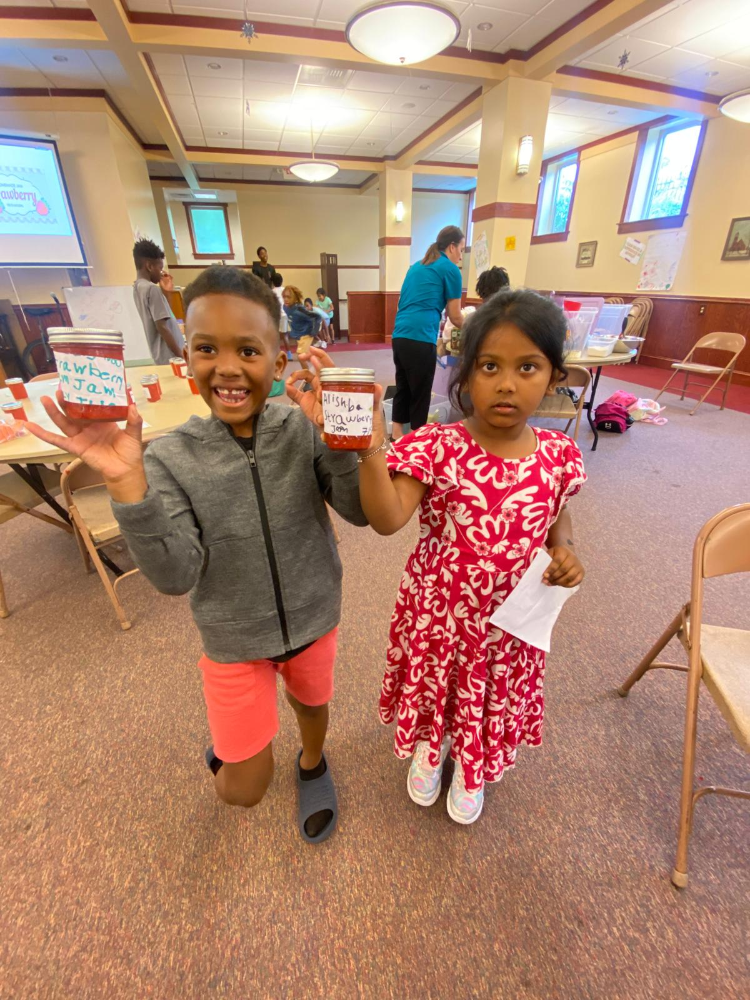
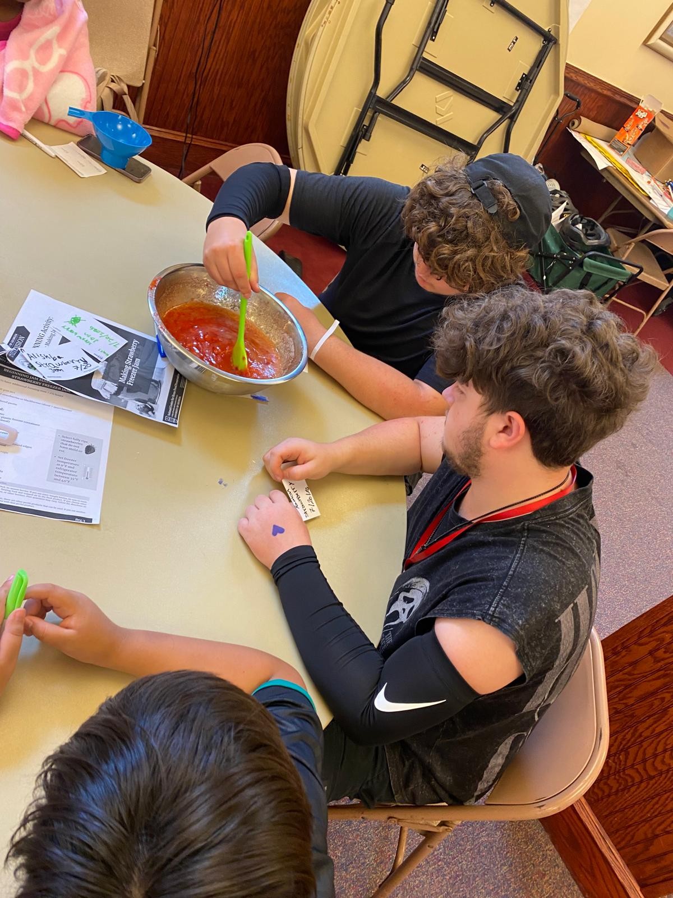
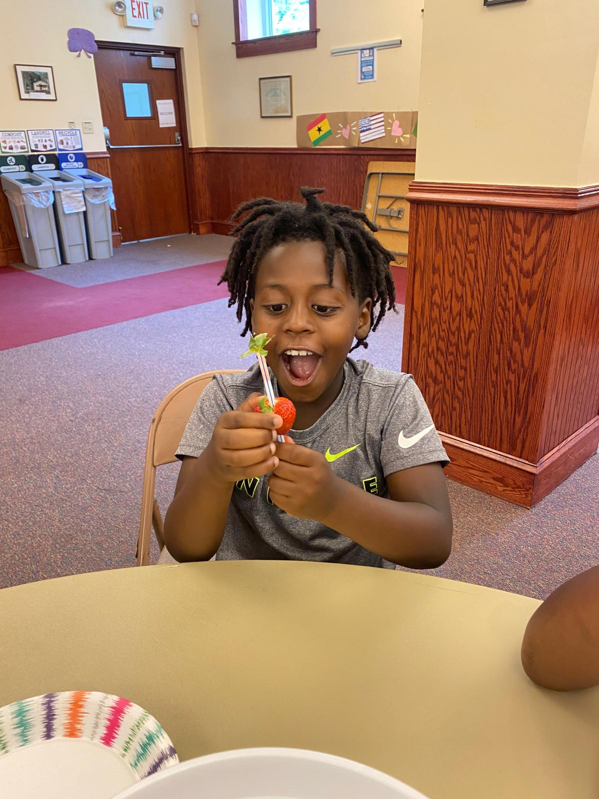
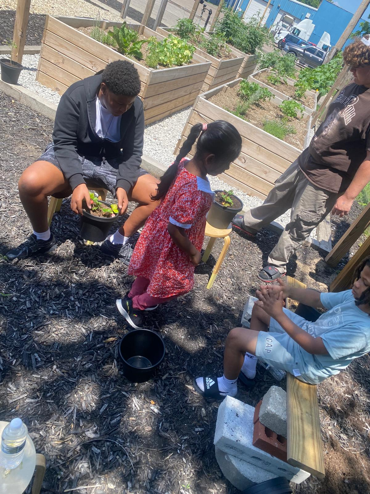
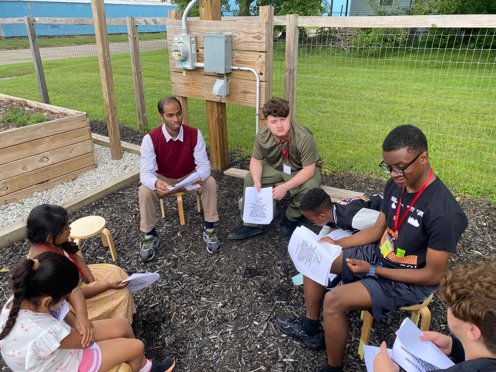

Healthy Food Access
Fresh and affordable food in every neighborhood.
Four Pathways. One Community.
How does this system sustain life?
Explore the Youth PlanA Youth-Led Vision for Kalamazoo
Scholars envision a Kalamazoo where everyone can access healthy, affordable, and culturally meaningful food. Young people should also have a voice in decisions about food, farming, gardens, land, water, and neighborhoods.
Fresh and affordable food in every neighborhood.
Learn how food is grown, transported, sold, cooked, shared, and reduced as waste.
Help young people build gardening, business, marketing, and money-management skills.
Connect food access with dignity, housing, equity, and community care.
Protect land and water while creating gardens, compost programs, and greener spaces.
See the Whole System
This visual shows how food moves from production and processing to distribution, retail, consumption, and responsible waste management. It also connects scholars’ learning to the Youth-Led Master Plan and healthier Kalamazoo communities.

Scholars in Action
Freedom School scholars explore agriculture and food systems through hands-on activities, food preparation, garden learning, observation, teamwork, and community conversations.





What Scholars Notice
Projects We Can Start
Grow vegetables, herbs, flowers, or fruit while learning teamwork, marketing, customer service, and healthy eating.
Lead workshops about gardening, cooking, composting, food waste, food careers, and starting a food business.
Grow extra food with schools, churches, farms, and families and share it with shelters, elders, food pantries, and community refrigerators.
Choose an area to clean, plant, improve, and transform into a healthier community gathering space.
Local Action. Global Responsibility.
Grow more food locally, improve access to fresh produce, support shelters and food pantries, teach families, and reduce food waste.
Create inclusive neighborhoods, protect land and water, turn unused spaces into gardens, and include youth in community decisions.
Learning in Action
Scholars can explore how greenhouse design supports plant growth through a hands-on engineering challenge.
Open the 4-H activity in a new tab.
Food System and Agriculture Pathway Library
All files supplied for the Food System and Agriculture Pathway are included below.
Download the complete youth vision, goals, projects, and community recommendations.
Download DOCXA guide for helping young learners understand food, farms, communities, and sustainability.
Open PDFA Cornell activity resource for mapping and investigating local food systems.
Open PDFA student handout introducing plant structures and how each part supports growth.
Open PDFA hands-on activity for observing, comparing, and understanding different soil types.
Open PDFA bilingual English–Spanish food preservation activity for scholars and families.
Open PDFDownload the activity-link document, including the Engineer a Greenhouse project.
Download DOCX